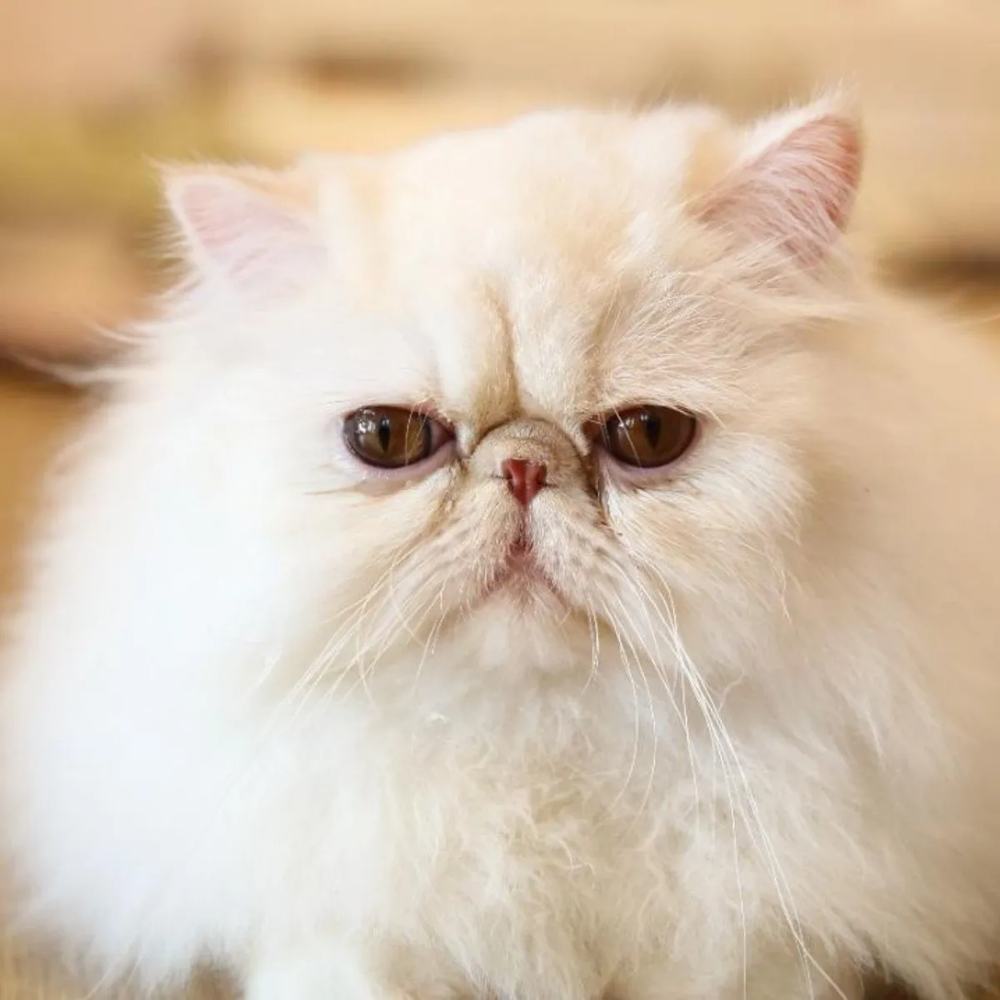

Historia de los michis :3
Origen :O
La historia del gato se basa sobre todo en la percepción que el hombre tiene del pequeño felino. Se cree que la domesticación del gato comenzó entre el 7500 a. C. y el 7000 a. C. La visión que el hombre tiene del gato ha diferido totalmente de una época a otra, desde el Antiguo Egipto cuando era venerado como un Dios, hasta la Edad Media cuando los quemaban en las hogueras, pensando que era un animal diabólico.
Actualidad :D
La historia del gato se basa sobre todo en la percepción que el hombre tiene del pequeño felino. Se cree que la domesticación del gato comenzó entre el 7500 a. C. y el 7000 a. C. La visión que el hombre tiene del gato ha diferido totalmente de una época a otra, desde el Antiguo Egipto cuando era venerado como un Dios, hasta la Edad Media cuando los quemaban en las hogueras, pensando que era un animal diabólico.
Datos curiosos :P
-
 Son cariñosos
Son cariñosos
-
Son territoriales
-
Hay muchos estilos y colores :D
-
Su ronroneo es curativo
-
Siempre caen de pie
-
Sueño muy profundo
-
Sus glándulas olfativas son muy buenas
-
Tienen muy buena higiene personal
-
Su comunicación puede llegar a ser compleja
-
Consumen tu alma pero son bonis